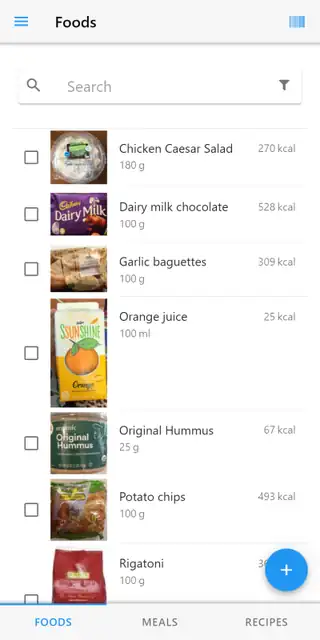
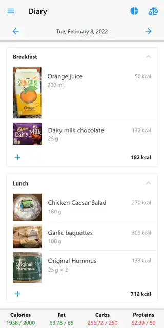

Waistline
صحة ورياضة
Waistline is a libre calorie counter and weight tracker that allows the user to keep a diary of the food they eat and variations in their weight. All data is kept on the user's device and can be exported or imported easily when needed. The app includes a barcode scanner that connects to the Open Foo
✓ ترخيص مفتوح (GPL-3.0-only) · آخر تحديث: 2026-08-19
3.11.1الإصدار
12.9 MBالحجم
GPL-3.0-onlyالرخصة
Open in Kanzتحميل APK (12.9 MB)
Download APK
SHA-256: 7b60de91f2bd4d37f1330499101c436a2ceddbcee1fd7ff37e54b750f339cb5a


امسح الكود لفتح صفحة التطبيق
Scan to open this app page
لو كنز مش متثبت عندك: نزّل متجر كنز.
Not installed? Get the Kanz store.